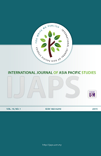
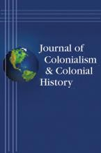

Radicals tells the story of a group of radical Malay men and women from ordinary social backgrounds who chose to oppose foreign rule of their homeland, knowing full well that by embarking on this path of resistance, they would risk imprisonment or death. Their ranks included teachers, journalists, intellectuals, housewives, peasants, preachers, and youths. They formed, led, and contributed to the founding of political parties, grassroots organizations, unions, newspapers, periodicals, and schools that spread their ideas across the country in the aftermath of the Great Depression, when colonialism was at its height and evident in all areas of life in their country. But when their efforts to uproot foreign dominance faltered in the face of the sanctions the state imposed upon them, some of these radicals chose to take up arms, while others engaged in aggressive protests and acts of civil disobedience to uphold their rights. While some died fighting and hundreds were incarcerated, many lived to resist colonialism until their country attained its independence in August 1957, all of these Malay radicals were devoted to becoming free men and women and to claiming their right to be treated as equals in a world riddled with prejudice and contradictions.
Syed Muhd Khairudin Aljunied’s innovative study brings to light the less charted and unanalyzed terrain of the radical experience—becoming and being radical. He argues that the experiences and histories of radicals in colonial Malaya can be elucidated in a more nuanced way by interrogating them alongside evolving local and global circumstances and by analyzing them through the lenses of a set of overarching and interconnected mobilizing concepts—a set of ideas, visions, and notions that the radicals used to reason and justify their advent—that were internalized, lived, and utilized in the course of their activism. These mobilizing concepts were their weapons and armor, employed to organize, strategize, protect, and consolidate themselves when menaced by the tentacles of the colonial state as they embarked upon the agonizing path towards independence. Those interested in Malaysian history, colonial history, radical movements, and resistance groups will enjoy this fascinating study.
“The book is well researched; its author is extremely well informed of the debates on the Malay Left and related issues. The sources whether archival or secondary sources were impeccable and the prose made reading a real pleasure. In the last analysis Radicals: Resistance and Protest in Colonial Malaya is highly recommended for those seeking a more balanced view of Malaysia’s political history.” —International Journal of Asia Pacific Studies
“This is a highly readable and valuable contribution. Scholars of Indigenous responses to colonialism would be interested in this twentieth-century example of a radical anti-colonial movement in a different corner of the British Empire, where groups of native Malay intellectuals and activists articulated their own visions of modernity and nationhood to contest colonial and male patriarchal discourse.” —Journal of Colonialism and Colonial History
“The story of the Malay radicals has never been told so fully and so vividly; the author has pieced together a fascinating history which he tells with considerable compassion. Though the history of the Malay radicals may, as the author suggests, be seen as a history of losers, if we never know about those who lost, we may never have a proper appreciation of those who won, and the recent emergence of a more pluralistic politics in Malaysia suggests a need to have the fullest understanding of the emergence and shaping of Malay political consciousness as charted in this book. The prose is exceedingly readable (and often almost lyrical).” —Carol Tan, SOAS, University of London
Dr Syed Muhd Khairudin Aljunied is an Associate Professor at the Faculty of Arts and Social Sciences, National University of Singapore (NUS). He received his BA and MA in History from the National University of Singapore in 2003 and completed his doctorate at the School of Oriental and African Studies, London in 2008. Dr Khairudin has studied and conducted research in countries such as Philippines, Indonesia, Malaysia, Australia, Netherlands and the United Kingdom. His book publications include Colonialism Violence and Muslims in Southeast Asia: The Maria Hertogh Controversy and its Aftermath (Routledge, 2009) and Radicals: Resistance and Protest in Colonial Malaya (Northern Illinois University Press, 2015) which Choice magazine describes as “an incredibly useful resource for scholars working on Southeast Asia, and Malaysia in particular.” Muslim Cosmopolitanism. His most recent book, Muslim Cosmopolitanism: Southeast Asian Islam in Comparative Perspective (Edinburgh University Press, 2017), investigates the complex ways by which cosmopolitan ideals have been creatively employed and carefully adapted by Muslim individuals, societies and institutions in Southeast Asia to bring about the necessary contexts for mutual tolerance and shared respect between and within different groups, particularly between religious groups in society. Dr Khairudin has held a number of visiting positions. He was an Honorary Research Associate at La Trobe University, Australia in 2012. In 2013, he was a Fulbright Professor at Columbia University. More recently, Dr Khairudin was a Visiting Professor at the University of Brunei (2015). He has published articles in reputable journals such as The Public Historian (University of California Press), Indonesia (Cornell Southeast Asian Program Publications), History Workshop Journal (Oxford University Press), Journal of Southeast Asian Studies (Cambridge University Press), Journal of Social History (Oxford University Press), Journal of Historical Sociology (Wiley-Blackwell), Critical Asian Studies (Routledge), and Social History (Routledge), among others. Dr Khairudin specialization is in the areas of the Intellectual History, Religious Cosmopolitanism and Social Movements. He is currently the book series editor of the Routledge Series of Islam and Muslims in Southeast Asia. His current research include forthcoming monograph on the reformist thought of an Indonesian scholar, Hamka (Haji Abdul Malik bin Abdul Karim Amrullah), Malay migrants in Australia as well as on Muslim intellectual responses to secularism.